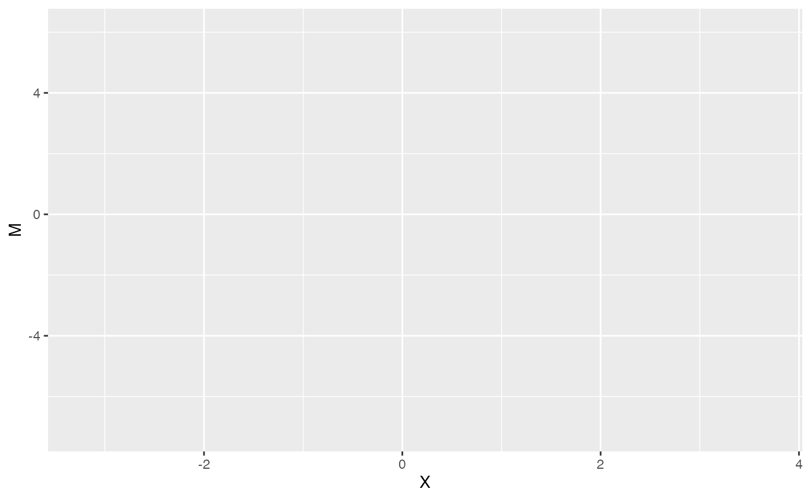
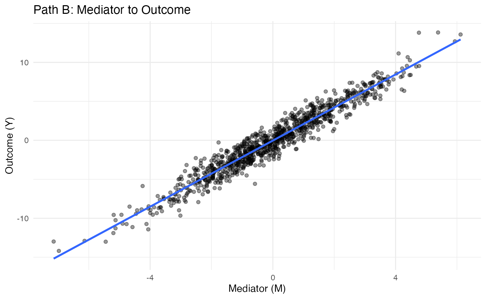

Front-door Criterion: Explaining Causal Paths Through Mediators
front-door-criterion.Rmd🚪 Front-door Criterion in Causal Inference
The front-door criterion allows causal identification even when there is an unmeasured confounder between the treatment and outcome — provided we can observe a mediator that fully transmits the causal path.
1. 🎯 Simulate Front-door Data
set.seed(42)
n <- 1000
U <- rnorm(n) # Unobserved confounder
X <- 0.5 * U + rnorm(n) # Treatment influenced by U
M <- 1.5 * X + rnorm(n) # Mediator influenced by X
Y <- 2 * M + 0.5 * U + rnorm(n) # Outcome influenced by M and U
df <- data.frame(X, M, Y)
head(df)## X M Y
## 1 3.0105377 4.766384643 9.5325868
## 2 0.2417731 0.084735594 -0.9055924
## 3 1.1522976 0.003710699 -0.2180185
## 4 0.6934047 -0.966597894 -2.7654351
## 5 -0.7937992 -2.482507183 -3.6471197
## 6 -0.6505452 -0.609979528 -2.15247812. ⚠️ Naive Regression is Biased
##
## Call:
## lm(formula = Y ~ X, data = df)
##
## Residuals:
## Min 1Q Median 3Q Max
## -7.8508 -1.5715 0.0027 1.4748 7.9338
##
## Coefficients:
## Estimate Std. Error t value Pr(>|t|)
## (Intercept) -0.03721 0.07284 -0.511 0.61
## X 3.21389 0.06561 48.987 <2e-16 ***
## ---
## Signif. codes: 0 '***' 0.001 '**' 0.01 '*' 0.05 '.' 0.1 ' ' 1
##
## Residual standard error: 2.303 on 998 degrees of freedom
## Multiple R-squared: 0.7063, Adjusted R-squared: 0.706
## F-statistic: 2400 on 1 and 998 DF, p-value: < 2.2e-163. 🧠 Estimate Causal Effect Using Front-door Formula
model_M_X <- lm(M ~ X, data = df)
model_Y_M <- lm(Y ~ M, data = df)
beta_M_X <- coef(model_M_X)["X"]
beta_Y_M <- coef(model_Y_M)["M"]
frontdoor_effect <- beta_M_X * beta_Y_M
cat("Estimated Front-door Effect:", round(frontdoor_effect, 2))## Estimated Front-door Effect: 3.134. 📈 Visualize Causal Chain
ggplot(df, aes(x = X, y = M)) +
geom_point(alpha = 0.4) +
geom_smooth(method = "lm", se = FALSE) +
labs(title = "Path A: Treatment to Mediator", x = "Treatment (X)", y = "Mediator (M)") +
theme_minimal()
ggplot(df, aes(x = M, y = Y)) +
geom_point(alpha = 0.4) +
geom_smooth(method = "lm", se = FALSE) +
labs(title = "Path B: Mediator to Outcome", x = "Mediator (M)", y = "Outcome (Y)") +
theme_minimal()